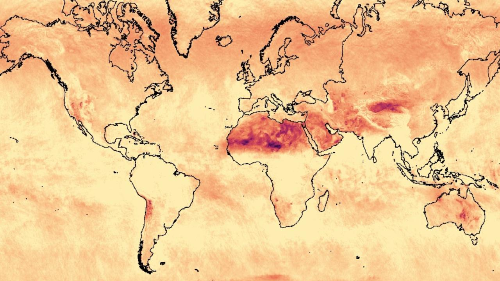
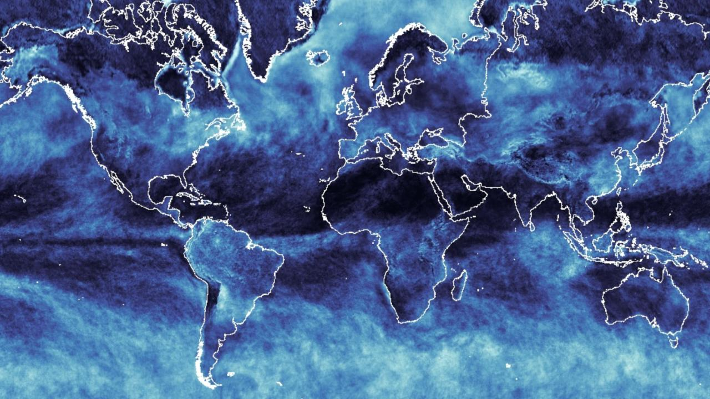
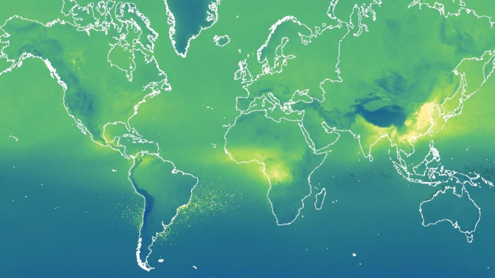
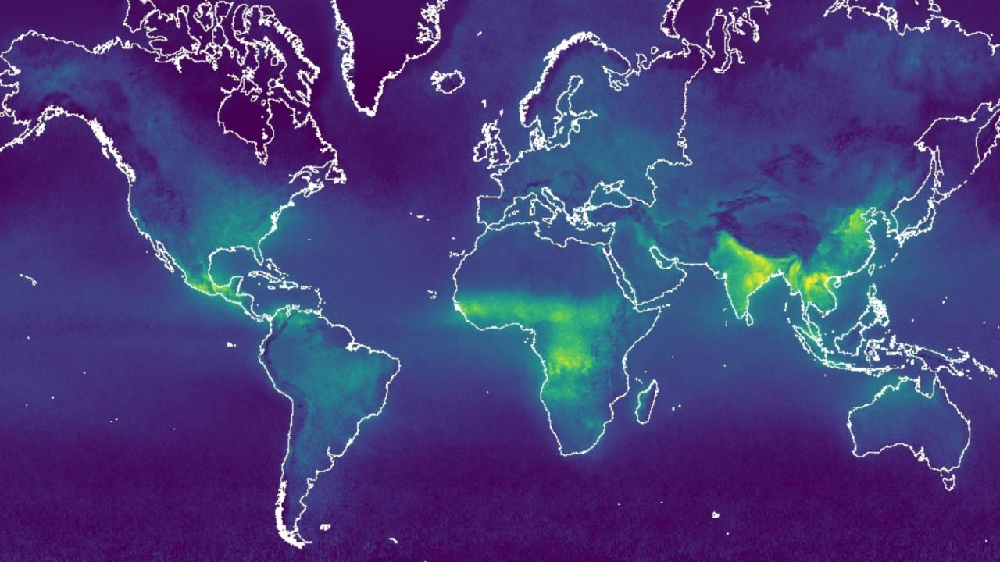
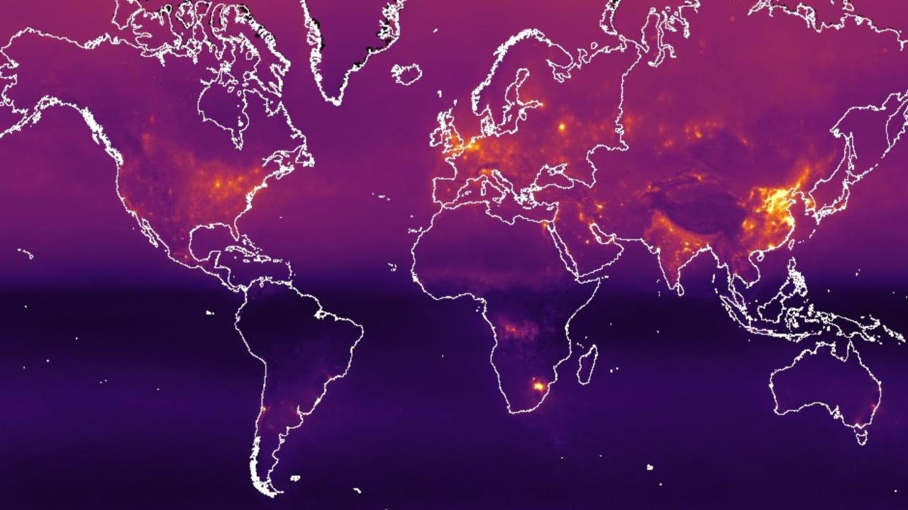
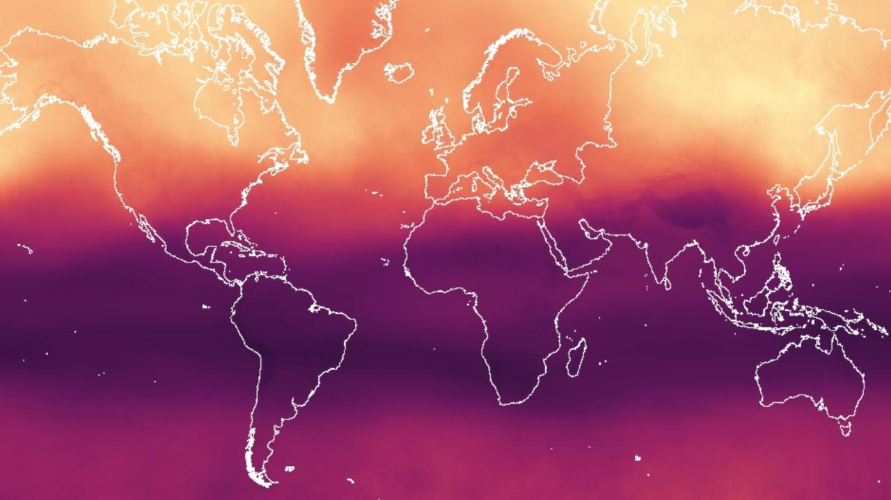
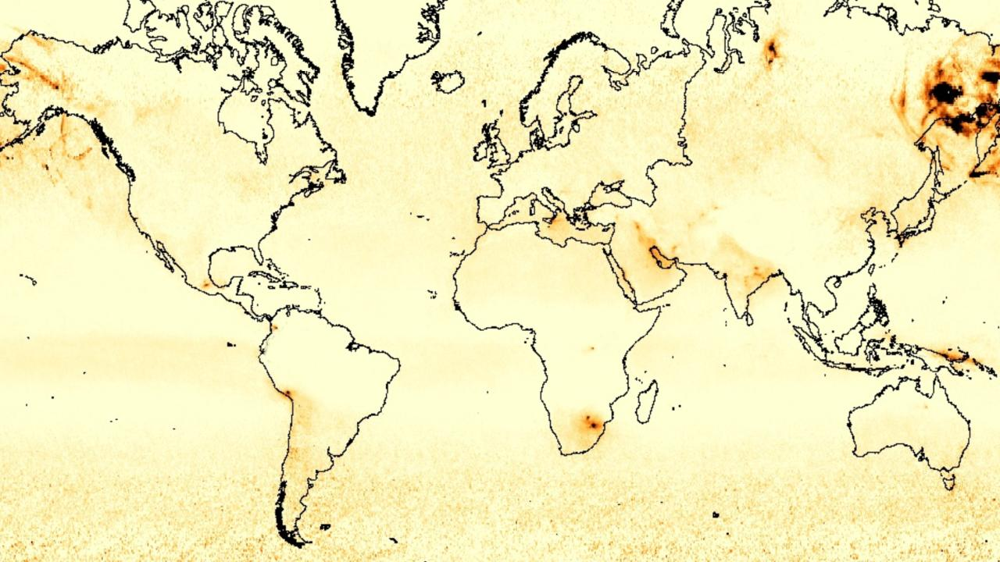

8 Propuesta de Indicadores
Indicadores de podrían componer la matriz, con su definción, comlejidad de contrucción y representación.
8.1 Variaciones Climáticas
8.1.1 Temperatura
Referencias: Datasets tagged temperature in Earth Engine
- Terra Land Surface Temperature and Emissivity Daily Global 1km:
-
The MOD11A1 V6 product provides daily land surface temperature (LST) and emissivity values in a 1200 x 1200 kilometer grid. The temperature value is derived from the MOD11_L2 swath product. Above 30 degrees latitude, some pixels may have multiple observations where the criteria for clear-sky are met. When this occurs, the pixel value is the average of all qualifying observations. Provided along with both the day-time and night-time surface temperature bands and their quality indicator layers are MODIS bands 31 and 32 and six observation layers. MOD11A1.061

8.1.2 Precipitaciones
Referencias: Datasets tagged precipitation in Earth Engine
8.2 Contaminantes
The Sentinel-5 Precursor mission instrument collects data useful for assessing air quality. The TROPOMI instrument is a multispectral sensor that records reflectance of wavelengths important for measuring atmospheric concentrations of ozone, methane, formaldehyde, aerosol, carbon monoxide, nitrogen oxide, and sulphur dioxide, as well as cloud characteristics at a spatial resolution of 0.01 arc degrees.
8.2.1 Sentinel-5P UV Aerosol Index

A measure of the prevalence of aerosols in the atmosphere. Ideal for tracking the evolution of episodic aerosol plumes from dust outbreaks, volcanic ash, and biomass burning. Sentinel-5P UV Aerosol Index
Dataset availability: 2018-07-10 - Present
8.2.2 Sentinel-5P Cloud
 Cloud characteristics including: fraction, height and pressure for base and top, optical depth, and surface albedo.Sentinel-5P Cloud
Dataset availability: 2018-07-10 - Present
8.2.3 Sentinel-5P Carbon Monoxide

Concentrations of Carbon monoxide (CO) and water vapor. CO is an important atmospheric trace gas for our understanding of tropospheric chemistry. Main sources of CO are combustion of fossil fuels, biomass burning, and atmospheric oxidation of methane and other hydrocarbons. Sentinel-5P Carbon Monoxide
Dataset availability: 2018-07-10 - Present
8.2.4 Sentinel-5P Formaldehyde

Formaldehyde concentration. Formaldehyde is an intermediate gas in almost all oxidation chains of non-methane volatile organic compounds (NMVOC), leading eventually to CO₂. Sources include vegetation, fires, traffic and industrial. Sentinel-5P Formaldehyde
Dataset availability: 2018-07-10 - Present
8.2.5 Sentinel-5P Nitrogen Dioxide

Total, tropospheric, and stratospheric nitrogen dioxide concentration. Nitrogen dioxide enters the atmosphere as a result of anthropogenic activities such as fossil fuel combustion and biomass burning, as well as natural processes including microbiological processes in soils, wildfires and lightning. Sentinel-5P Nitrogen Dioxide
Dataset availability: 2018-07-10 - Present
8.2.6 Sentinel-5P Ozone
 Total atmospheric column ozone concentration. Ozone shields the biosphere from solar ultraviolet radiation. In the troposphere, it acts as an efficient cleansing agent, but at high concentrations it also becomes harmful to the health of humans, animals, and vegetation. Ozone is also an important greenhouse-gas contributing to ongoing climate change. Sentinel-5P Ozone
Dataset availability: 2018-07-10 - Present
8.2.7 Sentinel-5P Sulphur Dioxide

Atmospheric sulphur dioxide (SO_2) concentration. SO_2 enters Earth’s atmosphere through both natural and anthropogenic processes, though the majority is of anthropogenic origin. SO₂ emissions adversely affect human health and air quality and also have an effect on climate through radiative forcing.. Sentinel-5P Sulphur Dioxide
Dataset availability: 2018-07-10 - Present
8.2.8 Sentinel-5P Methane

Atmospheric methane (CH_4) concentration. After carbon dioxide (CO_2), it is the most important contributor to the anthropogenically enhanced greenhouse effect. It enters Earth’s atmosphere through both natural and anthropogenic processes, though the majority is of anthropogenic origin. Sentinel-5P Methane
Dataset availability: 2019-02-08 – Present